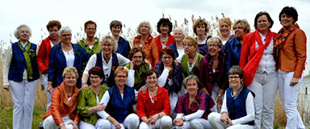

<div class="event-info">
	<div>
		<div class="img-wrap">
	
		</div>
		<div class="songs">
			<p>...</p>
			<p>...</p>
			<p>...</p>
			<p>...</p>
			<p>...</p>
		</div>
		<div class="content-wrap">
    <p><strong>Vrouwenkoor De Paradijsvogels uit Biddinghuizen</strong></p>
	<p>Vrouwenkoor De Paradijsvogels uit Biddinghuizen is een uniek koor en bestaat sinds 2008.</p>
	<p>Het koor richt zich op de lichte muziek en heeft een repertoire van moderne en vlotte nummers.</p>
	<p>Er wordt in het Nederlands, Engels en Duits gezongen. Ondanks het plezier en de ontspanning verliezen de dames de kwaliteit om een goed optreden te verzorgen niet uit het oog.</p>
	<p>&nbsp;</p>
	<p>Dirigente: Francis Evers</p>
	<p>&nbsp;</p>
	<p><a href="https://www.deparadijsvogels.net" target="_blank">https://www.deparadijsvogels.net</a></p>
		</div>
	</div>
</div>